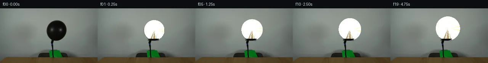
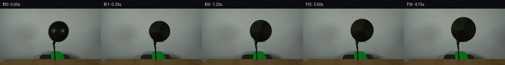
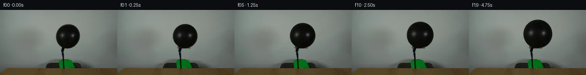
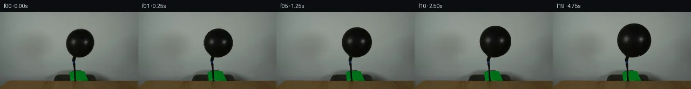
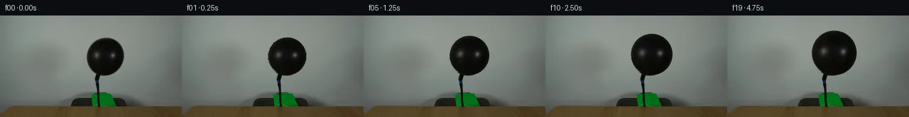
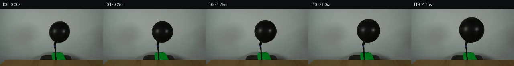
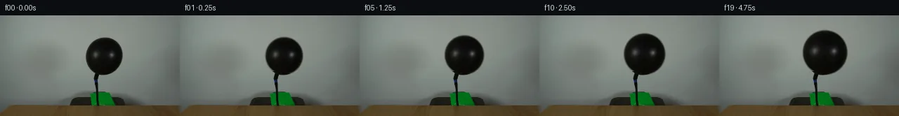
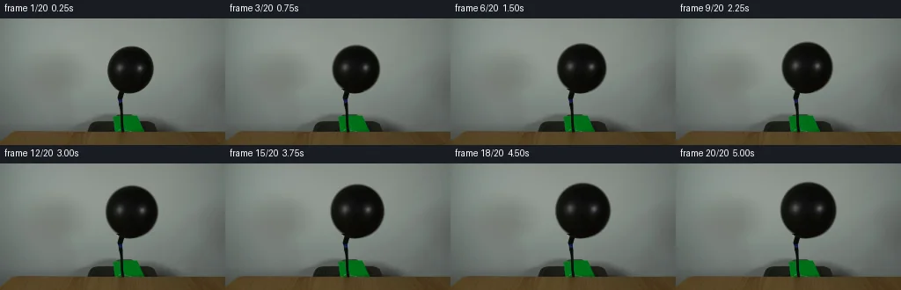
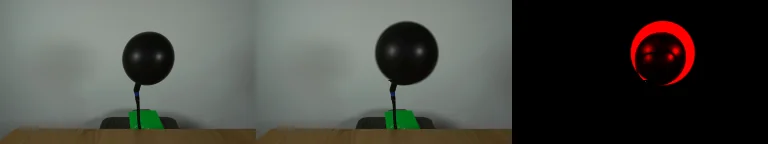

V0 · 初版
2026-11-05T21:01:59.603721+00:00 · RGB f45bc913dff1
![]()
Observable Generation Trace
把最终像素视频、Harness 冻结的每轮候选、真实工具事件和 Agent 自述放在同一页。可观测证据与模型自述分开标记，避免把“模型说它检查过”误当成真实工具调用。
![首帧]()
Static locked-off single-shot with fixed frame throughout filmed with constant framerate in real-time. The scene shows a realistic scientific demonstration. The scene only contains the described setup and actions. The balloon is attached to a black hose that points upwards from behind a wooden table. Air is being pumped into the black balloon.
首帧显示在左侧播放器初始画面。Track 权限、隔离和 tensor 一致性来自 run manifest，而不是 METHOD.md。
默认勾选初版和最终版；可选其他版本一起同步播放。仅检查图更新的连续重复快照已合并，回退旧视频仍保留为一次修订。
Observable events
来源：events.jsonl + run manifest
events.jsonl 可验证该 Agent 成功读取了 27 张 PNG；上面的 round 图不等同于读取次数，而是 Harness 独立冻结的候选。
Frozen candidates
每张图来自该 round 的真实 00 / 01 / 05 / 10 / 19 帧

pixels bd089f33fa0e13df · code f7b1f71ffeb09bf1
--- previous/generate.py +++ current/generate.py @@ -0,0 +1,251 @@ +"""PixelWorld case_0038: air being pumped into a black balloon. + +Local pixel operations only. Frame 0 is the verbatim first_frame.png; later +frames re-render the inflating sphere analytically (normal-space colour lookup +of the original shaded balloon) over a static background whose wall was +reconstructed by diffusion inpainting. See METHOD.md. +""" +from pathlib import Path +import numpy as np +from PIL import Image + +import artifact_io + +HERE = Path(__file__).parent + +# ---------------------------------------------------------------- geometry -- +CX0, CY0, R0 = 147.99, 57.60, 26.15 # alpha~0.5 contour of the t0 balloon +PX, PY = 136.8, 82.3 # fixed nozzle pivot +S_END = 1.205 # final linear scale +N = 20 + +YY, XX = np.mgrid[0:144, 0:256] +D0 = np.hypot(XX - CX0, YY - CY0) + + +def scale_at(t): + """Constant volumetric pump flow: r^3 grows linearly.""" + return float((1.0 + (S_END ** 3 - 1.0) * t / (N - 1)) ** (1.0 / 3.0)) + + +# -------------------------------------------------- wall background fill ---- +def inpaint_wall(frame): + """Harmonic (Laplace) fill of the wall hidden behind the t0 balloon disk.""" + from scipy.sparse import diags + from scipy.sparse.linalg import spsolve + lum = frame.mean(2) + h, w, _ = frame.shape + + # free pixels = disk interior/fringe that must become plain wall, plus the + # rubber collar strip directly below the sphere (re-stamped every frame) + free = ((D0 < R0 + 1.5) & (YY <= 80)) | \ + ((XX >= 131) & (XX <= 160) & (YY >= 81) & (YY <= 85)) + + # wall-trust mask for boundary clamping: exclude all non-wall objects + wall = np.ones((h, w), bool) + wall[(XX > 114) & (XX < 183) & (YY > 25) & (YY < 92)] = False # balloon bbox + wall[(XX > 128) & (XX < 147) & (YY > 78) & (YY < 113)] = False # hose/neck + wall[YY >= 109] = False # pump/box/table + wall &= lum > 80 + # non-free, non-wall pixels clamp to the original as well + clamp = (~free) + + idx = -np.ones((h, w), np.int64) + fy, fx = np.where(free) + idx[fy, fx] = np.arange(len(fy)) + m = len(fy) + + # 4*u - sum u_neigh = 0; clamped neighbours move to the RHS + rows = np.repeat(np.arange(m), 4) + cols = np.zeros(4 * m, np.int64) + clamped = np.zeros(4 * m, bool) + neigh = [(0, 1), (0, -1), (1, 0), (-1, 0)] + for k, (dy, dx) in enumerate(neigh): + ny_ = np.clip(fy + dy, 0, h - 1) + nx_ = np.clip(fx + dx, 0, w - 1) + ni = idx[ny_, nx_] + sl = slice(k * m, (k + 1) * m) + cols[sl] = np.clip(ni, 0, m - 1) + clamped[sl] = ni < 0 + + A = diags([4.0] * m, 0, (m, m), format='lil') + free_edge = ~clamped + A[rows[free_edge], cols[free_edge]] = -1.0 + A = A.tocsr() + + rhs = np.zeros((m, 3)) + for k, (dy, dx) in enumerate(neigh): + ny_ = np.clip(fy + dy, 0, h - 1) + nx_ = np.clip(fx + dx, 0, w - 1) + bc = idx[ny_, nx_] < 0 + rhs[bc] += frame[ny_[bc], nx_[bc]].astype(np.float64) + + sol = spsolve(A, rhs) + out = frame.astype(np.float64).copy() + out[fy, fx] = np.asarray(sol) + return np.clip(out, 0, 255) + … diff truncated; 164 more lines …

pixels b413aac6025d429b · code 92e6ec1032bf5914
--- previous/generate.py
+++ current/generate.py
@@ -148,7 +148,7 @@
a = -0.5
w = np.where(t <= 1, (a + 2.0) * t ** 3 - (a + 3.0) * t ** 2 + 1.0, 0.0)
w = np.where((t > 1) & (t < 2),
- a * t ** 3 - 5 * a * t ** 2 + 4 * a * t - a, w)
+ a * t ** 3 - 5 * a * t ** 2 + 8 * a * t - 4 * a, w)
return w
wx = np.stack([kernel(fx + 1), kernel(fx), kernel(1 - fx), kernel(2 - fx)], 1)
pixels b7e47aeb76887d75 · code 1362e00c0136ad37
--- previous/generate.py
+++ current/generate.py
@@ -192,8 +192,8 @@
col = np.zeros((px.shape[0], px.shape[1], 3))
ix = sx[inside]; iy = sy[inside]
- dd = np.hypot(ix - cx, iy - cy)
- nx = (ix - cx) / dd; ny = (iy - cy) / dd
+ # orthographic sphere normal: screen offset / sphere radius
+ nx = (ix - cx) / r; ny = (iy - cy) / r
qx = CX0 + R0 * nx; qy = CY0 + R0 * ny
vals = bicubic(src, qx, qy)
acc = np.zeros((hit.sum(), 3))
pixels 3bdd0c299d2c3df6 · code 9c6d8dbbca414974
--- previous/generate.py
+++ current/generate.py
@@ -36,10 +36,9 @@
lum = frame.mean(2)
h, w, _ = frame.shape
- # free pixels = disk interior/fringe that must become plain wall, plus the
- # rubber collar strip directly below the sphere (re-stamped every frame)
- free = ((D0 < R0 + 1.5) & (YY <= 80)) | \
- ((XX >= 131) & (XX <= 160) & (YY >= 81) & (YY <= 85))
+ # free pixels = disk interior/fringe only; the rubber collar below (y>=83)
+ # is real static foreground and is kept as-is.
+ free = (D0 < R0 + 1.5) & (YY <= 82)
# wall-trust mask for boundary clamping: exclude all non-wall objects
wall = np.ones((h, w), bool)
pixels 238172fa47625922 · code 598d403f757d187e
--- previous/generate.py
+++ current/generate.py
@@ -205,10 +205,11 @@
a = alpha[..., None]
sub[:] = sub * (1 - a) + col * a
- # static rubber collar / neck / blue ring, stamped from the original frame
+ # static rubber neck knot / blue ring (narrow nozzle column only); the
+ # wider collar fringe lies on the growing sphere and stays rendered.
lum0 = frame0.mean(2)
fy0, fy1 = 80, 96
- fx0, fx1 = 130, 161
+ fx0, fx1 = 130, 143
fmask = (((lum0[fy0:fy1, fx0:fx1] < 80) |
((frame0[fy0:fy1, fx0:fx1, 2].astype(int) -
frame0[fy0:fy1, fx0:fx1, 0].astype(int) > 15) &
pixels 9e03e0cbe123bfc0 · code aed2869c0ba94aea
--- previous/generate.py
+++ current/generate.py
@@ -31,14 +31,15 @@
# -------------------------------------------------- wall background fill ----
def inpaint_wall(frame):
"""Harmonic (Laplace) fill of the wall hidden behind the t0 balloon disk."""
- from scipy.sparse import diags
+ from scipy.sparse import coo_matrix
from scipy.sparse.linalg import spsolve
lum = frame.mean(2)
h, w, _ = frame.shape
- # free pixels = disk interior/fringe only; the rubber collar below (y>=83)
- # is real static foreground and is kept as-is.
- free = (D0 < R0 + 1.5) & (YY <= 82)
+ # free pixels = disk interior plus the full ~2 px antialiased limb band,
+ # so every clamped neighbour of the hole is clean wall (not dark fringe).
+ # The rubber collar below y=82 is real static foreground, kept as-is.
+ free = (D0 < R0 + 2.2) & (YY <= 82)
# wall-trust mask for boundary clamping: exclude all non-wall objects
wall = np.ones((h, w), bool)
@@ -55,7 +56,8 @@
m = len(fy)
# 4*u - sum u_neigh = 0; clamped neighbours move to the RHS
- rows = np.repeat(np.arange(m), 4)
+ # (index layout is per-direction blocks, matching `cols`)
+ rows = np.tile(np.arange(m), 4)
cols = np.zeros(4 * m, np.int64)
clamped = np.zeros(4 * m, bool)
neigh = [(0, 1), (0, -1), (1, 0), (-1, 0)]
@@ -67,17 +69,31 @@
cols[sl] = np.clip(ni, 0, m - 1)
clamped[sl] = ni < 0
- A = diags([4.0] * m, 0, (m, m), format='lil')
free_edge = ~clamped
- A[rows[free_edge], cols[free_edge]] = -1.0
- A = A.tocsr()
+ ar = np.concatenate([np.arange(m), rows[free_edge]])
+ ac = np.concatenate([np.arange(m), cols[free_edge]])
+ av = np.concatenate([np.full(m, 4.0), np.full(free_edge.sum(), -1.0)])
+ A = coo_matrix((av, (ar, ac)), (m, m)).tocsr()
+
+ # clamped neighbours that are the dark neck/collar (not wall) must supply
+ # an estimated plain-wall value, or they poison the fill at the chord
+ wall_est = frame.astype(np.float64).copy()
+ for y in range(78, 96):
+ good = np.where(frame[y, 110:192].mean(1) > 110)[0] + 110
+ if len(good) >= 2:
+ for x in range(110, 192):
+ if not wall[y, x]:
+ k = int(np.searchsorted(good, x))
+ l = good[max(k - 1, 0)]; r = good[min(k, len(good) - 1)]
+ tt = (x - l) / max(r - l, 1)
+ wall_est[y, x] = (1 - tt) * frame[y, l] + tt * frame[y, r]
rhs = np.zeros((m, 3))
for k, (dy, dx) in enumerate(neigh):
ny_ = np.clip(fy + dy, 0, h - 1)
nx_ = np.clip(fx + dx, 0, w - 1)
bc = idx[ny_, nx_] < 0
- rhs[bc] += frame[ny_[bc], nx_[bc]].astype(np.float64)
+ rhs[bc] += wall_est[ny_[bc], nx_[bc]]
sol = spsolve(A, rhs)
out = frame.astype(np.float64).copy()
pixels d742bb3c03d2eb31 · code 9c7a6b5ed0e39fb7
--- previous/generate.py
+++ current/generate.py
@@ -14,7 +14,8 @@
HERE = Path(__file__).parent
# ---------------------------------------------------------------- geometry --
-CX0, CY0, R0 = 147.99, 57.60, 26.15 # alpha~0.5 contour of the t0 balloon
+CX0, CY0, R0 = 147.99, 57.60, 26.20 # geometric edge (coverage 0.5 contour)
+EDGE_W = 1.20 # soft-limb half width (fitted to frame 0)
PX, PY = 136.8, 82.3 # fixed nozzle pivot
S_END = 1.205 # final linear scale
N = 20
@@ -110,12 +111,12 @@
interior radial shading along each ray, so sampled colours are sphere-only.
"""
src = frame.astype(np.float64).copy()
- band = (D0 > R0 - 2.4) & (D0 < R0 + 1.8) & (YY < 88)
+ band = (D0 > R0 - 2.4) & (D0 < R0 + 2.2) & (YY < 88)
ntheta = 2048
thetas = np.linspace(0, 2 * np.pi, ntheta, endpoint=False)
rtrust = np.array([R0 - 2.6, R0 - 3.4, R0 - 4.2, R0 - 5.0])
- rfill = np.arange(R0 - 2.4, R0 + 1.81, 0.15)
+ rfill = np.arange(R0 - 2.4, R0 + 2.21, 0.15)
def bilinear(img, x, y):
x0 = np.floor(x).astype(int); y0 = np.floor(y).astype(int)
@@ -201,20 +202,26 @@
sx, sy = np.broadcast_arrays(px[..., None, None] + off[None, None, None, :],
py[..., None, None] + off[None, None, :, None])
d = np.hypot(sx - cx, sy - cy)
- inside = d <= r
- alpha = inside.mean((2, 3))
+ wgt = np.clip(0.5 - 0.5 * (d - r) / EDGE_W, 0.0, 1.0)
+ alpha = wgt.mean((2, 3))
hit = alpha > 0
col = np.zeros((px.shape[0], px.shape[1], 3))
- ix = sx[inside]; iy = sy[inside]
- # orthographic sphere normal: screen offset / sphere radius
+ m = wgt > 0
+ ix = sx[m]; iy = sy[m]; iw = wgt[m]
+ # orthographic sphere normal: screen offset / sphere radius (clamped)
nx = (ix - cx) / r; ny = (iy - cy) / r
+ rr = np.hypot(nx, ny)
+ k = np.minimum(1.0 / np.maximum(rr, 1e-9), 1.0)
+ nx *= k; ny *= k
qx = CX0 + R0 * nx; qy = CY0 + R0 * ny
- vals = bicubic(src, qx, qy)
+ vals = bicubic(src, qx, qy) * iw[..., None]
acc = np.zeros((hit.sum(), 3))
- np.add.at(acc, np.repeat(np.arange(hit.sum()), inside.sum((2, 3))[hit]), vals)
- cnt = inside.sum((2, 3))[hit]
- col[hit] = acc / cnt[:, None]
+ wsum = np.zeros(hit.sum())
+ rep = np.repeat(np.arange(hit.sum()), m.sum((2, 3))[hit])
+ np.add.at(acc, rep, vals)
+ np.add.at(wsum, rep, iw)
+ col[hit] = acc / wsum[:, None]
out = bg.copy()
sub = out[ys[0]:ys[-1] + 1, xs[0]:xs[-1] + 1]Final visual checks
Harness 保存的最终产物


Agent claims
以下文字由生成 Agent 撰写，不等同于工具证据
first_frame.png, 256×144)Static, locked-off camera. A black rubber balloon hangs on a black hose/nozzle that rises from behind a wooden table front edge (table top edge at y≈130). Behind the hose is a bright green pump body (x≈125–164, y≈109–128) standing on a dark box (x≈100–178, y≈118–129). Background is a flat grey-green wall (luminance ≈114–149) with a soft vignette (brightest upper-centre) and one soft shadow blob to the left of the apparatus (centre ≈ x60–80, y55–85).
The prompt: air is being pumped into the balloon → the only motion is the balloon inflating (smooth growth about the fixed nozzle); everything else is rigid and static.
first_frame.png (exact equality required).Constant pump flow → radius follows a constant-volume curve s(t) = (1 + (s_end³ − 1)·t/19)^(1/3), s_end = 1.205.
| frame | t (s) | s | r (px) | centre | notes |
|---|---|---|---|---|---|
| 00 | 0.00 | 1.0000 | 26.20 | (147.99,57.60) | exact copy of first_frame.png |
| 01 | 0.25 | 1.0130 | 26.54 | (148.14,57.28) | first visible swelling, rim ≈0.3 px |
| 04 | 1.00 | 1.0501 | 27.51 | (148.55,56.36) | steady inflation, diameter ≈ 55 px |
| 09 | 2.25 | 1.1066 | 28.99 | (149.18,54.97) | diameter ≈ 58 px |
| 14 | 3.50 | 1.1579 | 30.34 | (149.76,53.70) | diameter ≈ 61 px |
| 19 | 4.75 | 1.2050 | 31.57 | (150.28,52.54) | final: diameter ≈ 63 px, top y≈21, left x≈119, right x≈182, bottom ≈ y84 |
No camera motion, no secondary objects moving; the nozzle junction, hose, blue ring, pump, box, table and wall never change.
All 20 frames (256×144, 4 fps) come from a single deterministic Python script,
generate.py (numpy / scipy / Pillow only; no network, no external models).
Frame 00 is the verbatim first_frame.png. For frames 01–19 the balloon is
re-rendered analytically as an inflating sphere over a static background in
which the wall hidden behind the frame-0 balloon was reconstructed once. Every
pixel outside the balloon/neck region is byte-identical to frame 00 in every
frame.
The pump, hose, blue ring, green pump body, dark box, wooden table and wall never move or change (the prompt describes a locked-off single shot with only the balloon inflating).
first_frame.pngα = (wall − observed)/(wall − sphere),
binned by signed distance) to the soft-edge model used at render time.
Best fit: C0 = (147.99, 57.60), r0 = 26.20 px, edge half-width w = 1.20 px
(bin residuals ≲ 0.05).The grown disk covers up to ~5 px of wall beyond the initial silhouette, so the wall behind frame 0's disk must be reconstructed.
d < r0 + 2.2) down to y = 82, i.e. down to the chord where the collar
begins. Everything below that chord is real foreground and is never solved
for.4u = Σ u_neighbours
independently per RGB channel — one sparse linear system (4-neighbour
Laplacian, scipy coo_matrix / spsolve). Non-wall neighbours on a free
pixel move to the RHS as clamped values.The reconstruction is computed once and reused as the static background.
Sampling the original frame near the silhouette would return colours blended with the wall fringe. A "sphere-only" source image at the frame-0 position is therefore built:
|d − r0| ≲ 2.3, above y = 88), colour is rebuilt per ray:
at 2048 angles, RGB is sampled at four trusted interior radii
(r0 − 2.6 … r0 − 5.0) with bilinear interpolation, a per-angle linear
colour-vs-radius least-squares fit preserves faint azimuthal rim variation,
and the fit is evaluated on a fine radial grid (step 0.15 px), gently clamped
to RGB in [2, 60] to stop noisy extrapolation. A 1 px cross-fade at the inner
edge of the band hides the join with the copied interior.Constant pump volumetric flow with constant-pressure approximation gives linear volume growth, hence
s(t) = (1 + (s_end³ − 1)·t/19)^(1/3), s_end = 1.205, t = 0…19
with r(t) = s·r0 and centre C(t) = P + s·(C0 − P). Scaling about the fixed nozzle pivot preserves the measured lean and keeps the bottom of the balloon almost stationary at the neck (it moves ~0.3 px over the whole clip), which matches a balloon filling while tied to a rigid nozzle. The radius grows 26.20 → 31.57 px (diameter 52 → 63 px, +20.5% linear, ~75% volume). The per-frame radius increment is 0.27–0.40 px, well below one pixel per step.
For t ≥ 1, inside a tight bounding box around the grown disk:
w = clip(0.5 − 0.5·(d − r(t))/1.20, 0, 1); pixel α is the mean over the
16 subpixels. This reproduces the frame-0 anti-aliasing style and avoids a
hard, crawling disk edge.n = clip-to-unit((offset / r)) (offset/r, not offset/d, so shading stays
correct across the full disk interior), and looks up the frame-0 source at
C0 + r0·n with vectorised Catmull–Rom bicubic interpolation. Because the
lookup is in normal coordinates, both specular highlights remain at fixed
positions on the rubber surface and enlarge proportionally with the sphere.np.add.at), then
composited out = bg·(1−α) + col·α.Frame 00 is returned as a copy of the decoded first_frame.png and an assert
in the script checks exact equality with the input; artifact_io.save writes it
to frames/00.png from that same array, so the on-disk PNG is byte-identical
to the provided first frame.
python3 generate.py runs in ~3 s and writes, via artifact_io.save:
pixels.npz (uint32 0xRRGGBB tensor, shape (144,256,20)), frames/00.png
–19.png, inspection.png (8-frame sheet) and index.html (standalone
player); the script itself also writes transition_check.png
(frame 0 | frame 19 | ×4 amplified red difference heatmap).
Checks run after generation:
frames/00.png byte-identical to first_frame.png (same 36,520 bytes).pixels.npz:
0 mismatching channel values.